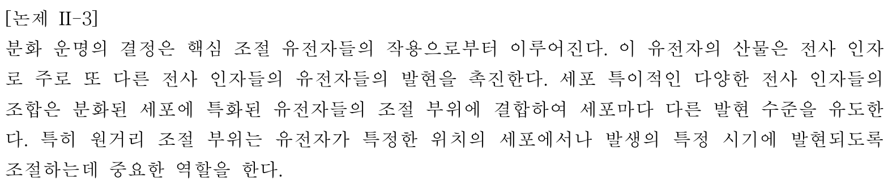

해설 II-3

[논제 II-3]
분화 운명의 결정은 핵심 조절 유전자들의 작용으로부터 이루어진다. 이 유전자의 산물은 전사 인자로 주로 또 다른 전사 인자들의 유전자들의 발현을 촉진한다. 세포 특이적인 다양한 전사 인자들의 조합은 분화된 세포에 특화된 유전자들의 조절 부위에 결합하여 세포마다 다른 발현 수준을 유도한다. 특히 원거리 조절 부위는 유전자가 특정한 위치의 세포에서나 발생의 특정 시기에 발현되도록 조절하는데 중요한 역할을 한다.